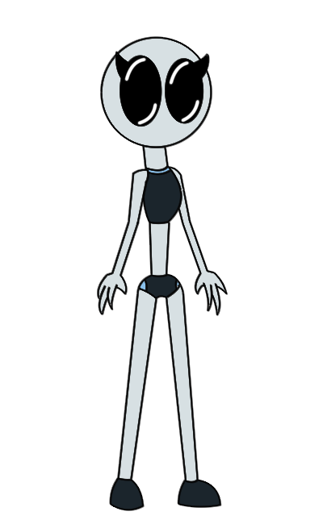

The track is "A Part Of Myself Is Somewhere Else" by Electrypnose. Will get removed if illegal.
When I heard that I can still use my 3DS for game making I've come up with a couple of ideas. Prosp was (Or is) a 2D adventure game that I'll make for my 3DS. It'll also be an animated series as well
Prosp is set in a barren, air-less world called Poz which is occupied by mouthless creatures. One of the creatures are sentient and are called The Rozp. The story is about one of these Rozps which is a female called Prsp.
Unoriginal design. She wasn't really meant to be known about but I couldn't handle myself.
This was a comic at first but I'm more better with low-motion animation so it's that now.